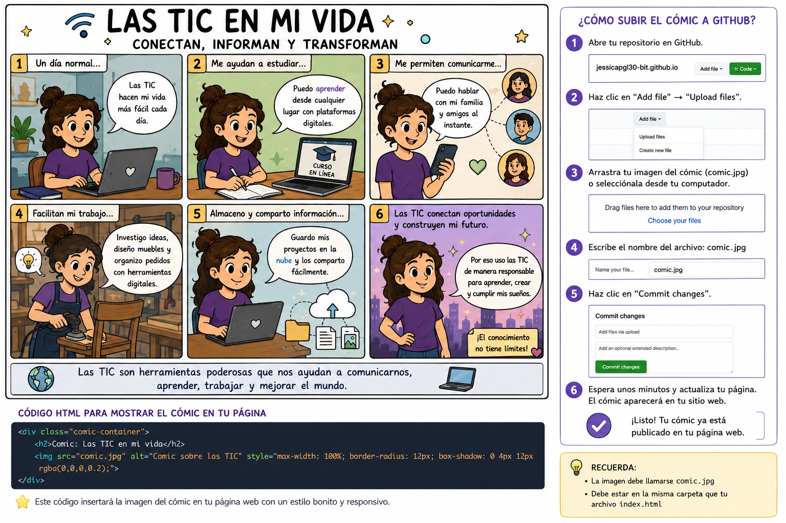
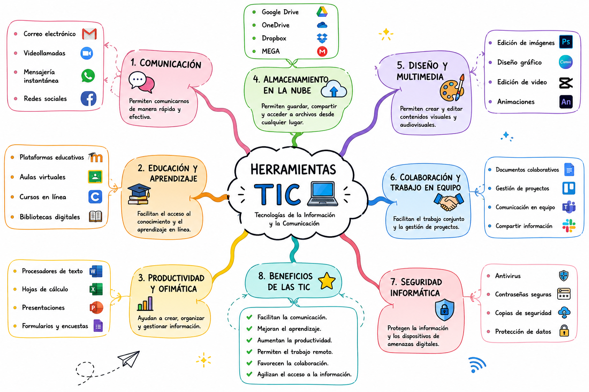

Dibujo y Modelado Arquitectónico • Carpintería • Diseño de Muebles • TIC
Hola, soy Jessica Paola Gómez y les doy la bienvenida a mi sitio web personal.
Este espacio fue creado como parte de una actividad académica para aplicar conocimientos relacionados con las Tecnologías de la Información y la Comunicación (TIC), así como para compartir información sobre mi perfil personal y profesional.
Aquí encontrarás información sobre mi experiencia, mis intereses, un comic relacionado con las TIC y un mapa mental que resume los conceptos más importantes de estas herramientas tecnológicas.
Mi nombre es Jessica Paola Gómez.
Estudié Dibujo y Modelado Arquitectónico en el SENA, donde adquirí conocimientos relacionados con la representación gráfica, diseño de espacios y visualización de proyectos arquitectónicos.
Actualmente me desempeño como carpintera, una actividad que me apasiona porque me permite combinar creatividad, precisión y funcionalidad en la fabricación de muebles y elementos para diferentes espacios.
Entre mis principales intereses se encuentran el diseño de muebles, la innovación, la decoración de interiores y el aprendizaje continuo de nuevas herramientas tecnológicas que aporten al desarrollo profesional.
Las Tecnologías de la Información y la Comunicación (TIC) son un conjunto de herramientas tecnológicas que facilitan la creación, almacenamiento, procesamiento y transmisión de información mediante medios digitales.
Correo electrónico, videollamadas, mensajería instantánea y redes sociales.
Plataformas virtuales, cursos en línea y bibliotecas digitales.
Word, Excel, PowerPoint y herramientas colaborativas.
Google Drive, OneDrive y otros servicios en la nube.
Canva, Photoshop, CapCut y herramientas creativas.
Protección de datos, antivirus y copias de seguridad.
La siguiente historieta muestra cómo las TIC facilitan actividades diarias como el estudio, la comunicación, el trabajo y el acceso al conocimiento.

Este mapa mental organiza las principales categorías de las Tecnologías de la Información y la Comunicación, así como sus aplicaciones y beneficios.

Las TIC son herramientas fundamentales para el desarrollo de la sociedad actual, ya que facilitan el acceso a la información, fortalecen la comunicación y contribuyen al aprendizaje continuo.
Como profesional interesada en el diseño, la carpintería y la innovación, considero que estas tecnologías representan una oportunidad para mejorar procesos, compartir conocimientos y ampliar las posibilidades de crecimiento personal y profesional.